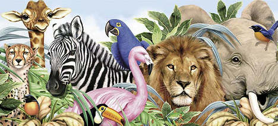

Startsida
vatten
växter
djur
Fakta om djur
På jorden har vi många djur. Vi människor äter en del av djuren. om en av en sista ras dör ut försvinner rasen föraltid. och om en ras dör blir det mindre kretslopp
http://www.kolmarden.com/djurpark/djur
